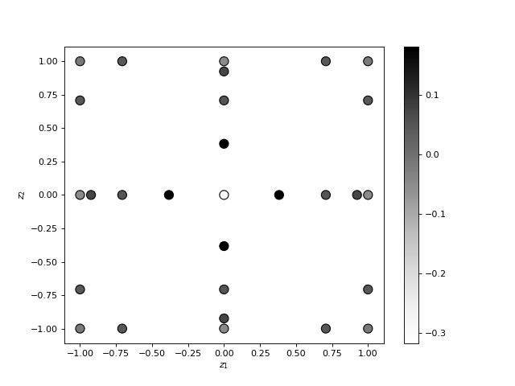
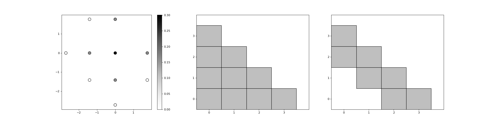
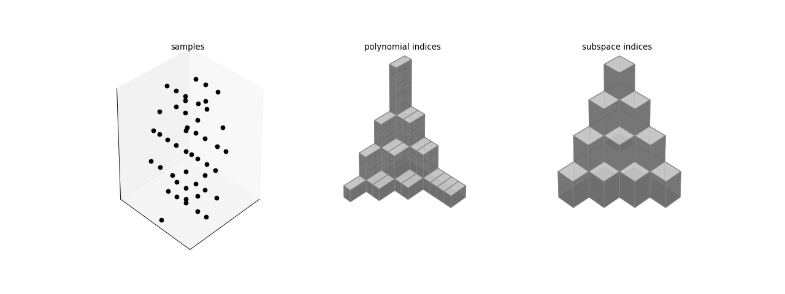

Compute isotropic sparse grid quadrature rule¶
To compute the samples and weights of an isotropic sparse grid quadrature simply run the following commands. The plot shows the sparse grid samples and the colorbar indicates the magnitude of the quadrature weights.
from pyapprox.sparse_grid import *
from pyapprox.visualization import plot_3d_indices
from pyapprox.univariate_quadrature import *
num_vars = 2; level = 3
quad_rule = clenshaw_curtis_in_polynomial_order
growth_rule = clenshaw_curtis_rule_growth
samples, weights, data_structures = get_sparse_grid_samples_and_weights(
num_vars,level,quad_rule,growth_rule)
plot_sparse_grid_2d(samples,weights)
plt.xlabel(r'$z_1$')
plt.ylabel(r'$z_2$')
plt.show()
(Source code, png, hires.png, pdf)
{kind=link}
{kind=link}

We can also use different quadrature rules for each dimension
quad_rule = [gaussian_leja_quadrature_rule,clenshaw_curtis_in_polynomial_order]
growth_rule = [leja_growth_rule,clenshaw_curtis_rule_growth]
and plot the subspace indices and the polynomial indices of the sparse grid.
plot_sparse_grid_2d(samples,weights,poly_indices=data_structures[1],
subspace_indices=data_structures[2])
plt.show()
(Source code, png, hires.png, pdf)
{kind=link}
{kind=link}

The code can be used for any number of variables.
def plot_3d_isotropic_mixed_rule_sparse_grid():
num_vars = 3; level = 3
quad_rule_1 = partial(
gaussian_leja_quadrature_rule,growth_rule=clenshaw_curtis_rule_growth)
quad_rule=[gaussian_leja_quadrature_rule,quad_rule_1,
clenshaw_curtis_in_polynomial_order]
growth_rule=[leja_growth_rule,clenshaw_curtis_rule_growth,
clenshaw_curtis_rule_growth]
samples, weights, data_structures = get_sparse_grid_samples_and_weights(
num_vars,level,quad_rule,growth_rule)
axs = plot_sparse_grid_3d(samples,weights,poly_indices=data_structures[1],
subspace_indices=data_structures[2])
axs[0].set_title('samples')
axs[1].set_title('polynomial indices')
axs[2].set_title('subspace indices')
plt.show()
(Source code, png, hires.png, pdf)
{kind=link}
{kind=link}
